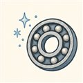
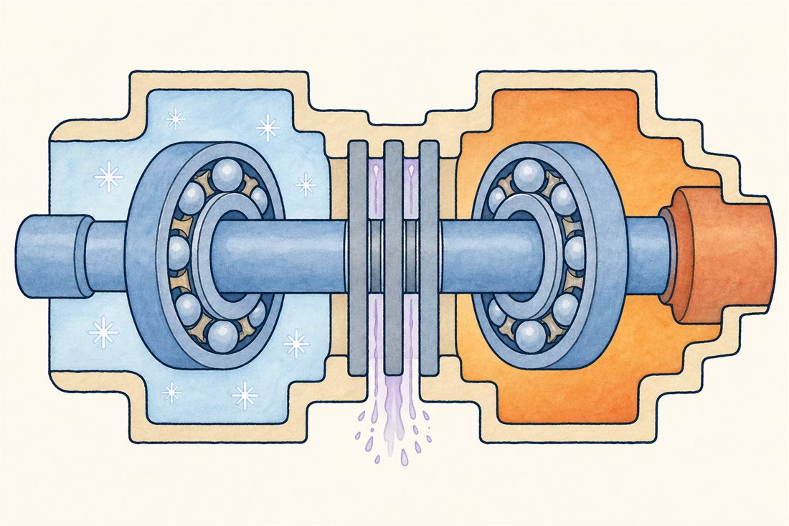
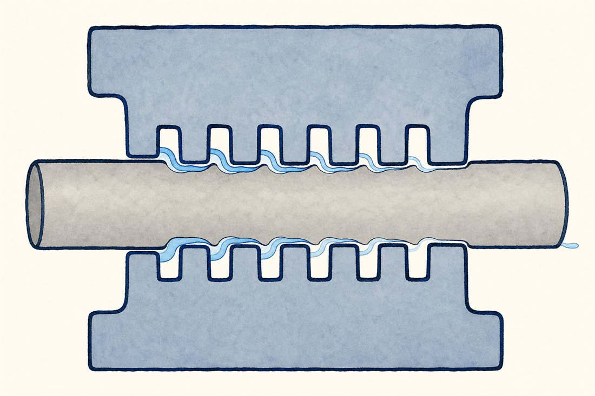
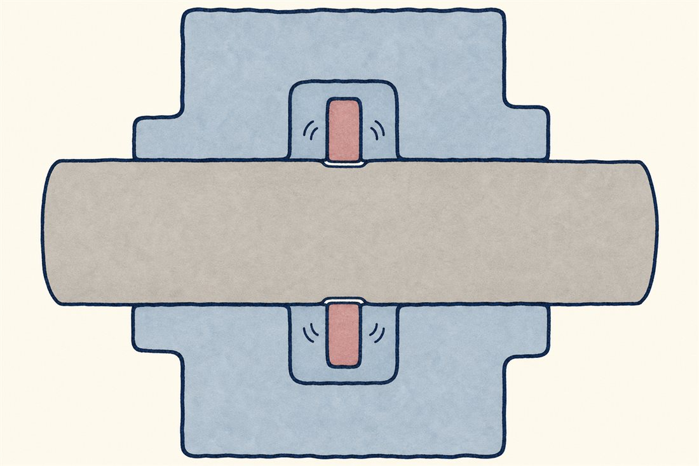
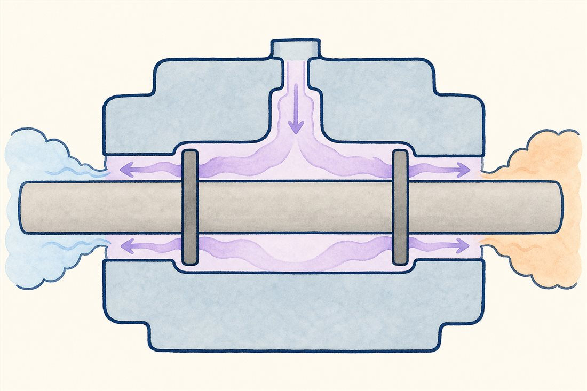

第3巻 だい5わ ── さかいめの章-253℃と火のあいだ
第1話の「軸の両端」の宿題を回収します。片端は-253℃の液体水素、反対端は数百℃にもなる駆動ガス——このふたつの世界が、大人の手のひら数個ぶんの距離で同居している。今日はその国境地帯の住人たち、軸受とシールの話です。派手さはありませんが、ターボポンプの信頼性は、実のところこの数十cmで決まります。

仕切りの道具箱には、性格の違う知恵が並んでいます。代表を3つ、切り替えてみてください。



よりみち油の使えない場所で、玉を回す
ふつうの機械なら軸受は油が守ります。でも-253℃で油は石になり、液体酸素の中の油は火薬になる——潤滑油という選択肢が最初からありません。かといって液体水素や液体酸素そのものには、潤滑性がほとんどない。答えは役割分担です: 流れる推進剤には摩擦熱を運び去る冷却係を任せ、潤滑はPTFE系の保持器から玉に移りつづける固体の薄膜（移着膜）に任せる。玉が転がるたびに保持器からフッ素樹脂がわずかに移り、それが潤滑膜として働く——消耗品の膜で回る、極低温トライボロジーの知恵です。LE-9では玉をセラミック（窒化ケイ素）にしたハイブリッド軸受が採用され、軽い玉が遠心荷重と発熱をさらに抑えています（IHI技報）。
よりみち酸素ポンプの掟
酸素ターボポンプには特別な掟があります——高圧の純酸素の中では、摩擦や粒子衝突などの着火のきっかけさえあれば、金属さえ燃える。高圧の液体酸素側に、水素や燃料を含む駆動ガスがわずかでも漏れ込めば、それは爆発の処方箋です。だから酸素ポンプの国境地帯は特に厳重で、シールを何枚も重ね、そのあいだに不活性なヘリウムのパージを吹き込み、漏れた者同士が絶対に出会えない緩衝地帯を作ります。漏れをゼロにするのではなく、漏れの行き先を設計する——シール設計の本質は、この言い回しに尽きます。ページ末尾の写真は、まさにその酸素ポンプ（LE-7A OTP）の断面実機です。
 流体屋のためのノート
流体屋のためのノート
軸受の高速性の第一指標はDN値（内径mm×rpm）——ロケットポンプは数百万に達する領域で、転動体の遠心力自体が効いてきます（荷重容量や寿命は接触応力・予圧・温度で別途評価する話）。玉軸受が選ばれるのは始動停止の速さと極低温での確実さゆえ（自己作用型の動圧流体膜軸受は、始動停止時に膜が育つまでが弱い——静圧型は別の選択肢です）。シール側の主役は浮動リング: 軸と数十µmの隙間を保ちながら自分で中心に寄る自律性が身上で、この「隙間の流体力」が次話の主役（ロマキン効果）へつながります。そしてシール漏れは損失そのもの——漏れ流量は効率の帳簿に直接載るので、シール設計は性能設計でもあります。国境地帯の熱設計（伝導・パージ・回り込み）が軸の温度分布を決め、それが嵌め合いと隙間を決める——ここは熱・流体・構造・材料の四者会談の常設会場です。
_at_Kobe_International_Conference_Center_20150704.JPG){kind=link}
・極低温軸受の移着膜潤滑: NASA報告（NTRS 19720008685ほか）／LE-9ハイブリッドセラミック軸受: IHI技報 Vol.58 No.2
・シール設計: NASA "Liquid Rocket Engine Turbopump Rotating-Shaft Seals"（NTRS 19780022641）
・G. P. Sutton, 9th ed., ch.10／NASA SP-8107